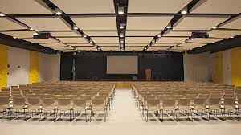

Essa igreja foi criada pelo The Rock, e nas pausas para comer ele comia panquecas. Por isso nessa escola chamam ele de "Deus The Rock, o comedor de panquecas"
Biblioteca da escola
Foi construída em 1979
Essa biblioteca foi criada pelo Leonardo Dicaprio, E enquanto ele construia um guarda-roupeira estava passando na rua e se impressionou com ele e chamou ele para atuar e ela aceitou.

Auditório daa escola
Foi construído em 1978
Esse foi o primeiro auditório em quem Neymar fez sua primeira palestra sobre futebol.